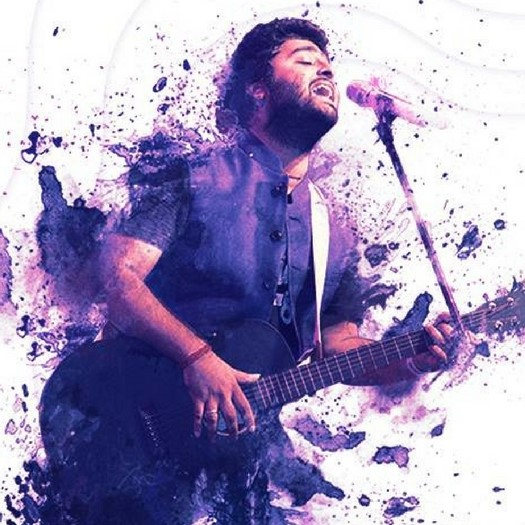

56,667,295 Monthly Listeners

Arijit Singh
About Artist
Arijit Singh was born on 25 April 1987 in Jiaganj, Murshidabad, West Bengal to a Punjabi father
and a Bengali mother. He began his music training at a young age at home.
His maternal aunt trained in Indian classical music, and his maternal grandmother used to sing.